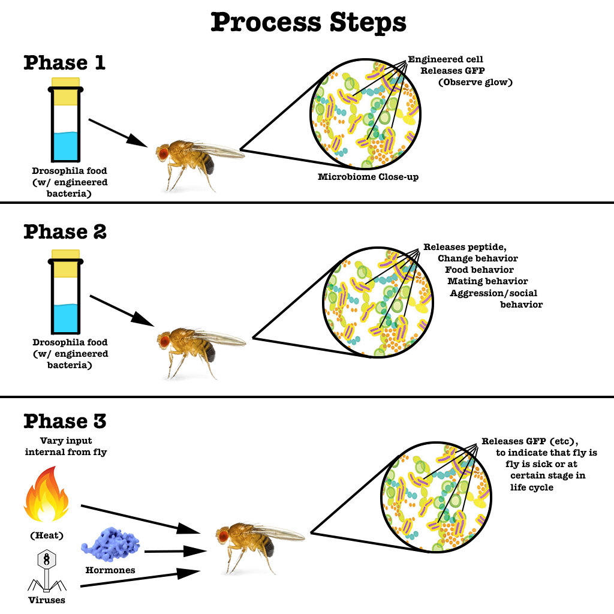

Our Current Project
Our current focus deals with the Drosophila fruit fly microbiome, and engineering a microbe to introduce to the fly gut.
Phase I: Successful Introduction of Microbe
This first phase will involve a simple circuit to confirm successful integration of the introduced microbe into the fly gut microbiome. This would involve engineering the microbe to release GFP or some other measurable indicator when in contact with food (likely some indigestible sugar). The presence of fluorescence would serve as proof that our engineered microbes are alive and functioning, and set precedent for further bioengineering.
Phase II: Engineering Various Initiators
The second phase will involve microbes responding to more complex initiators, for example, to some strain of bacteria, a virus, or some other signal within the fly physiology. This would allow us to monitor different aspects of the fly's physical state, such as the stage of its life cycle or the presence of disease.
Phase III: Biomedical Applications and Beyond
If we manage to pass the second phase, we can approach the final stage, which is the bioengineer microbes to actively respond to signals within the gut microbiome. This could involve the production of antibiotics in response to a bacterial pathogen, the modification of fly behavior or physiology in some capacity, etc.
